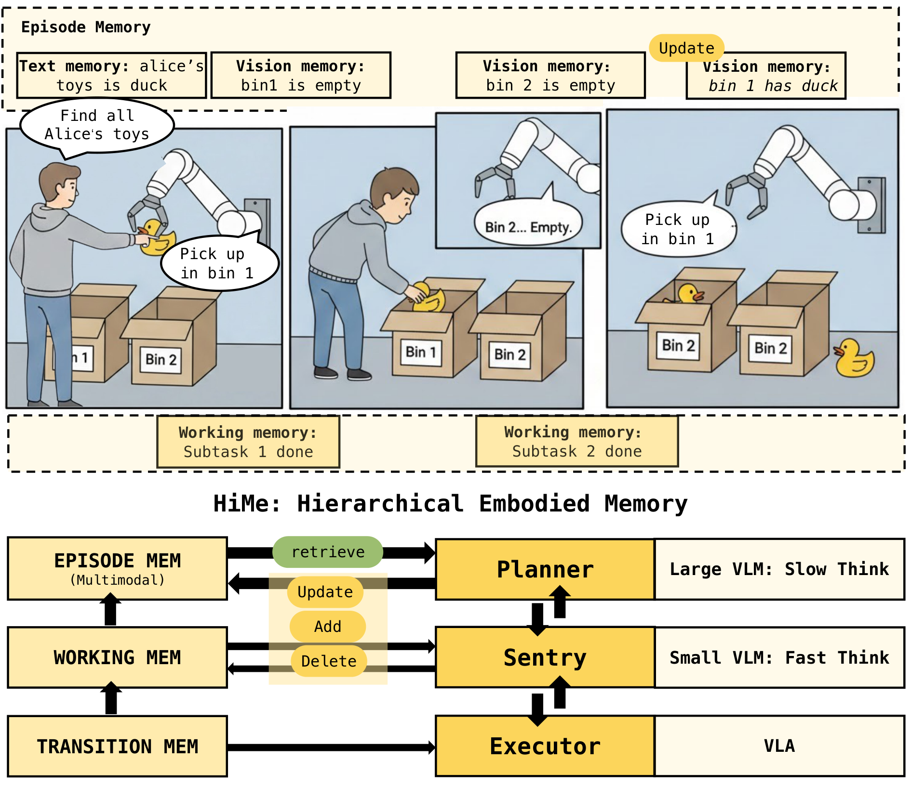

Introduction

Overview of HiMe. A motivating example illustrates the need for maintaining and updating task-relevant multimodal memory across long-horizon subtasks. HiMe addresses this by organizing embodied intelligence into a hierarchical structure that separates fast execution from memory-driven reasoning.
Vision-Language-Action (VLA) models have emerged as a powerful paradigm for general-purpose robotic manipulation. However, most existing architectures rely on the Markov assumption — the policy is conditioned only on the transient observation at the current time step. This prevents them from maintaining a persistent belief of the environment in non-Markovian settings, causing VLAs to struggle with complex, long-horizon tasks demanding long-range temporal dependencies.
A fundamental frequency-competence paradox exists: using large VLMs for real-time planning introduces prohibitive latency, while smaller models lack sufficient reasoning. We resolve this by decoupling memory and reasoning into hierarchical layers with distinct temporal resolutions, mirroring the multi-store structure of human cognition.
Contributions
- A Hierarchical Memory Management framework that decouples robotic control into transient (Executor), working (Sentry), and episodic (Planner) memory layers, resolving the granularity conflict in long-horizon VLA tasks.
- A Cross-modal Memory organization paired with an Active Management mechanism — enabling the robot to maintain knowledge plasticity and alignment in highly dynamic multimodal interactions.
- Extensive empirical evidence demonstrating superior performance and robustness in complex human-robot collaborative scenarios with significantly reduced VLM computational overhead.
Method
HiMe decomposes long-horizon control into three functional layers — each with a distinct temporal scale and cognitive role.
Layer 1 — Transient Memory
Executor (VLA)
A high-frequency VLA policy that maps immediate observations to actions. Stateless and computationally efficient, it reacts to physical dynamics at real-time speed.
Layer 2 — Working Memory
Sentry (Qwen3-VL-8B)
A lightweight VLM that monitors a sliding window of recent frames, identifying subtask completions and triggering the Planner only at critical junctions.
Layer 3 — Episodic Memory
Planner (GPT-4o)
A heavyweight VLM that manages long-term memory via cross-modal semantic schemata, performing retrieval and re-planning at low frequency when triggered by the Sentry.
Architecture of HiMe. The Sentry periodically tracks the Executor's progress and buffers observations. Upon detecting subtask completion, it triggers the Planner to consolidate memory and refine the procedural plan. The updated instruction is fed back to the Sentry, forming a closed-loop system.
Episodic Memory Design
The Planner maintains two complementary memory stores:
Contextual Memory ℰc
A multimodal key-value store that accumulates compact, task-relevant information — visual imagery and textual descriptions of object states, spatial constraints, and human preferences. Supports semantic retrieval via text queries.
Procedural Memory ℰp
An ordered list of language subgoals, each carrying status labels (active, pending, done) to synchronize the hierarchical control loop.
Active Management Mechanism
In contrast to passive memory accumulation, HiMe introduces explicit operations granting the robot knowledge plasticity:
Add — insert new facts or user preferences
Update — revise outdated entries
Delete — remove stale or conflicting data
Implementation Details
The framework is model-agnostic. Only the Executor requires domain-specific training; Sentry and Planner operate fully zero-shot, leveraging pre-trained generalization.
| Component |
Model |
Mode |
Details |
| Executor (πe) |
π₀.₅ (VLA) |
Fine-tuned |
160 H100 GPU hrs · 30k steps · AdamW · cosine LR · batch 256 |
| Sentry (πs) |
Qwen3-VL-8B |
Zero-shot |
Sliding window hs = 8 frames · monitor interval nm = 5 steps |
| Planner (πp) |
GPT-4o |
Zero-shot |
Two-turn CRUD protocol · invoked at subtask junctions only |
| Memory Backend |
text-embedding-3 |
— |
Vector DB · cosine similarity retrieval · unbounded capacity |
| Robot Platform |
WidowX-250s |
— |
Parallel gripper · dual camera (wrist + third-person) · 2 Hz control |
Ablation of memory management strategy across three tasks. Active management (HiMe) consistently outperforms FIFO and No-Management baselines.
Results
HiMe significantly outperforms all flat-memory baselines, achieving a 90% average success rate — effectively bridging the gap to the human-oracle upper bound.
Baselines
All methods share the same Executor (π₀.₅). Only the memory context and planning trigger differ — isolating the contribution of hierarchical memory from other variables.
| Method |
Planner Trigger |
Planner Memory |
| Transient Memory |
Periodic (fixed interval) |
Current frame only |
| Transient Memory w/ Sentry |
Sentry-triggered |
Current frame only |
| Flat Memory |
Periodic (fixed interval) |
Recent 8 frames + FIFO keyframe queue |
| HiMe w/o Sentry |
Periodic (fixed interval) |
Recent frames + structured keyframes |
| HiMe (Ours) |
Sentry-triggered |
Recent frames + structured keyframes |
| Human High-level |
Sentry-triggered |
Human oracle |
Main Results. HiMe compared against all baselines across three long-horizon tasks. HiMe achieves a 90% average success rate, bridging the gap to the Human High-level oracle.
+12 pp from Sentry alone: Transient Memory 14% → 26% — temporal consistency prevents erratic subtask switching.
+64 pp from hierarchy: 26% (Transient+Sentry) → 90% (HiMe) via structured retrieval and active management.
+22 pp from Sentry quality: HiMe w/o Sentry 68% → HiMe 90% — consolidated working memory reduces hallucinations.
Self-correction: HiMe uniquely updates its knowledge base when user preferences conflict or evolve mid-task.
Analysis
Sentry — temporal consistency. Without the Sentry, the Planner re-evaluates every frame, making the agent hypersensitive to transient visual noise and causing erratic subtask switching. The Sentry acts as a temporal lock — it prevents replanning until the current subtask is confirmed complete, boosting performance from 14% → 26% even with no memory.
Sentry — conservative nature. High Precision (~82%) but low Recall (~35%) reveals the Sentry's bias toward the incomplete state — it continues execution unless overwhelmingly confident. To avoid infinite loops from missed "Done" signals, a fixed-interval Planner fallback is added as a safety net, ensuring eventual progress regardless.
Memory — flat vs. hierarchical. Flat Memory (FIFO context) achieves only 65% vs. HiMe's 90%. A FIFO queue cannot distinguish critical frames from noise — as the episode grows, the context window floods with redundant observations, silently evicting earlier key information that is critical for later reasoning.
Memory — active management. No-Management (append-only) reaches 86% but falls short of HiMe's 90%. Without Update/Delete, memory accumulates obsolete states alongside current ones, introducing contradictions that confuse the Planner during retrieval.
Memory Modality Ablation
Robotic tasks impose heterogeneous memory demands that no single modality can satisfy. Spatial localization and fine-grained recognition favor visual memory — in Object Search, image-only (86%) substantially outperforms text-only (74%), because text is a lossy compression that discards spatial context and prevents visual re-grounding when initial perception fails. Conversely, abstract reasoning favors text — in Counting, text-only (91%) outperforms image-only (78%), since symbolic rules and user preferences are hard to recover from pixels on demand. Cross-modal memory combines both strengths and achieves the best performance across all tasks (avg. 90%).
Ablation of memory modality. Cross-modal (image + text) outperforms unimodal baselines across all tasks.
Sentry Working Memory Window
Increasing the Sentry's working memory window from 1 to 8 frames consistently improves both Precision (76% → 82%) and Recall (22% → 35%). A single frame often lacks sufficient temporal context to distinguish a momentary pause from genuine subtask completion. With 8 frames, the Sentry can leverage sequential cues to make more reliable judgments. The persistent gap between high Precision and low Recall reflects the Sentry's inherent conservative bias — it prefers to continue execution rather than risk a premature handover, which minimises false completions at the cost of occasionally missing the true transition signal.
Sentry precision & recall vs. working-memory window size (N = 1–8 frames). Larger windows improve both metrics.
Efficiency Analysis
The Sentry reduces Planner invocations by ~3× by shifting from step-by-step to subtask-level calls. Combined with infinite structured memory, HiMe achieves a 94% Memory Hit rate — virtually eliminating redundant re-exploration caused by forgotten context.
| Method |
Object Search |
Counting |
Rearrangement |
| API ↓ | Mem Hit ↑ | Score ↑ |
API ↓ | Mem Hit ↑ | Score ↑ |
API ↓ | Mem Hit ↑ | Score ↑ |
| HiMe (Ours) |
1.8 | 94% | 92% |
2.6 | 98% | 92% |
1.4 | 92% | 87% |
| Flat Memory |
5.4 | 68% | 64% |
4.8 | 61% | 58% |
6.2 | 76% | 73% |
API Call = average Planner requests per subtask. Memory Hit = fraction of memory-dependent subtasks where required context was present.